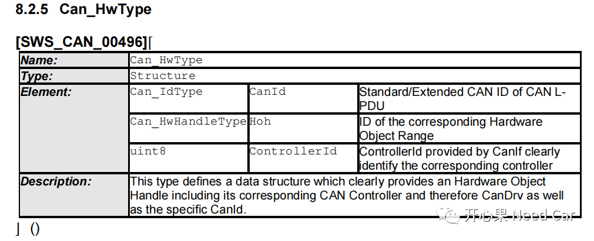
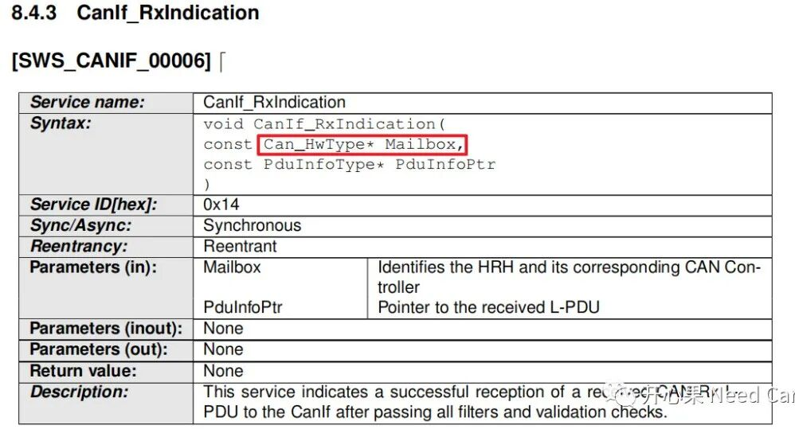
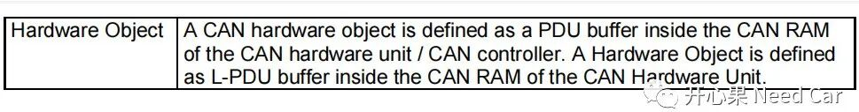
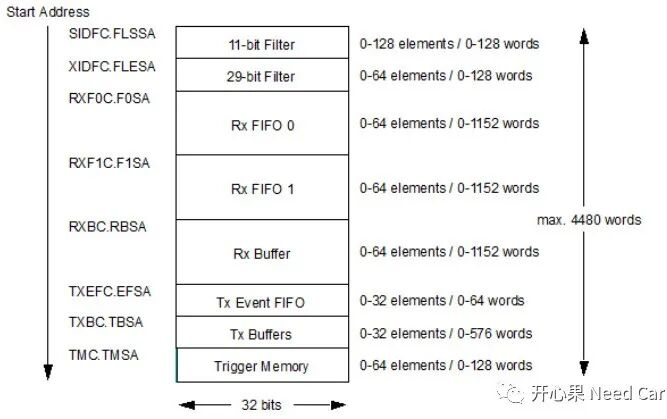
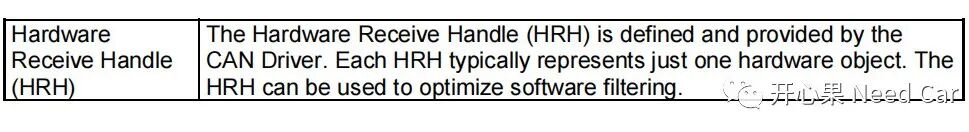
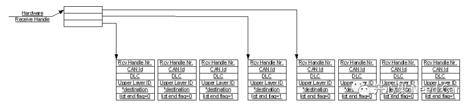
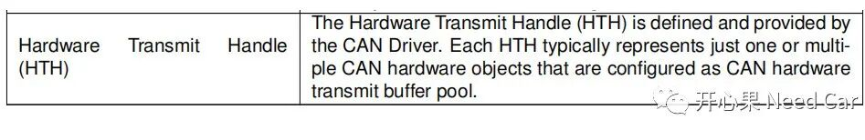
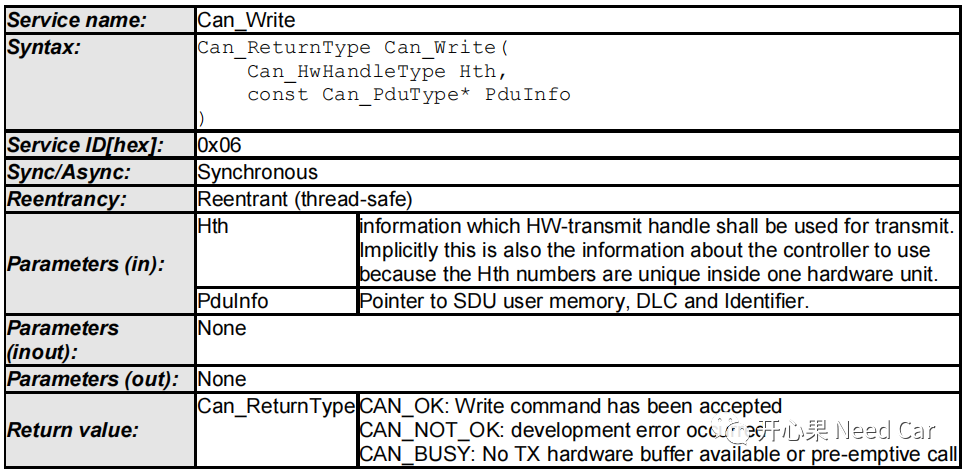
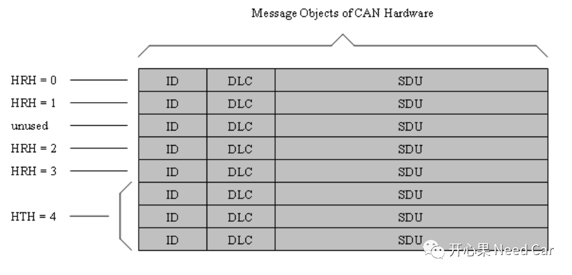
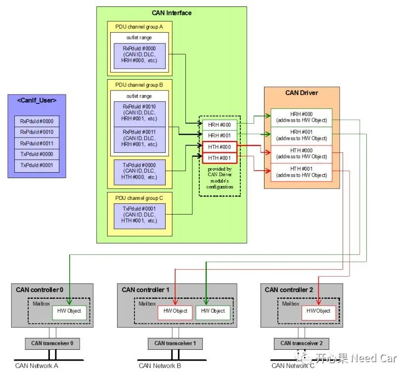

对于CAN总线，工程开发中，经常听到Mailbox、Hardware Object、HTH（Hardware Transmit Handle）、HRH（Hardware Receive Handle）等概念，这些概念之间有着怎样的关系呢？本文，着重理清这几个概念。
（一）Mailbox：邮箱。软件与硬件交互信息的接口，在Autosar的规范中，定义为一个数据结构，Can_HwType（struct类型），包含CanId、Hoh、ControllerId三个元素，如下所示：

我们知道，Autosar的架构是模块分层式的，为了最大程度的解耦硬件（驱动层），一般来说，Xx_If层不直接访问驱动层，而是抽象成软件模块与底层交互信息的结构，Mailbox就是一个典型的HOH抽象。对于Mailbox的使用，常用在CanIf_RxIndication接口中，接口的第一个参数就是Mailbox，如下所示：
当驱动层（CanDrv）接收到CAN报文以后，会调用此接口，告知上层（CanIf）数据的到来。CanIf在通过Mailbox->Hoh，进一步送给目标上层（CanNM、CanTp、PduR等）。注意：CanIf_RxIndication接口由CanIf实现。
（二）Hardware Object：硬件对象。一个CAN硬件对象可以理解为一个PDU缓存区，PDU缓存区位于CAN硬件单元的RAM区。Autosar中，对Hardware Object的定义如下所示：

CAN硬件单元中的RAM区划分又是怎样的呢？以TC3xx为例，RAM区的划分如下所示：

注意：此RAM区是可配置的，就像一个蛋糕，大小已经固定，每个人可以根据自己的量决定切多大块。对于每个Controller也是，使用多少，可以配置多少，只要不超过手册约束的阈值即可。（三）HRH：硬件接收句柄，习惯上称为"接收邮箱"。一般来说，每个HRH表示一个Hardware Object，由驱动层（CanDrv）定义。Autosar的CanDrv模块定义如下所示：
这里提到，HRH可以用于软件过滤（filter）优化功能，如何理解呢？我们知道，驱动（CanDrv）收到的报文并不一定都是节点所需要的，因此，可以通过过滤的方式将节点所需要的报文接收进来，其余的丢弃。过滤示意如下：

如上所示，一个HRH可以过滤一个Rx PDU，也可以过滤一段范围的Rx PDU。一般来说，过滤会通过CanID识别报文是否是节点需要的报文。
对于HRH，Autosar的CanIf模块，定义如下：
（四）HTH：硬件发送句柄，习惯上称为"发送邮箱"。每个HTH表示一个或者多个Hardware Object，具体使用几个Hardware Object，取决于RAM区（Buffer pool）的配置。定义如下：

HTH常用于Can_Write()接口中，将用户要发送的信息传递给给驱动层，如下所示：

HTHs、HRHs与Hardware Object的分配示意如下所示：

如上，一个HTH使用3个Hardware Object、每个HRH使用一个Hardware Object。当然，一个HRH也可以使用多个Hardware Object，一个HTH也可以使用一个Hardware Object。关于Hardware Object分配的介绍，可以参考前文CAN通信：Basic CAN与FIFO。2、Mailbox与Hardware Object关系
Mailbox与Hard Object的对应关系如下所示：
点击下方关注，一起聊聊Autosar/嵌入式，如果需要，联系作者进群，给你更专业的解答